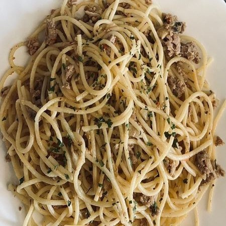

3 easy&tasty ideas for Lunch meal
| Ingredients | Quantity |
|---|---|
| Penne pasta | 250g |
| Onion | 1 unit |
| Carrot | 2 unit |
| Mushroom | 5 unit |
| Green onion | 3-4 unit |
| Oil | 2 teaspoon |
| Soya | 6 teaspoon |
| Hot chili spice | 1 unit |
Cook the pasta according to the package instructions. Filter and pour over a little olive oil and mix. At the same time, heat a wide pan with 1-2 tablespoons of olive oil and fry the onion until lightly golden. Add dwarf carrots and mushrooms, salt a little with the salt shaker and cook over medium heat for about 10 minutes (until the mushrooms are reduced and the carrots become soft but not too soft). Add the cooked pasta, the green onion and season with olive oil, soy and a pinch of hot chili. Stir for 2-3 minutes to absorb the flavors. Enjoy!
| Ingredients | Quantity |
|---|---|
| Prepared pasta | 500g |
| ground meat | 500g |
| Onion | 1 unit |
| Crushed tomatoes | 800g |
| Tomato paste | 3 teaspoon |
| Crashed garlic | 5 unit/td> |
| Basil leaves | 3/4 cup |
| Salt | 1 teaspoon |
| Black paper | 1 teaspoon |
Fry the onion in a pot with a tablespoon of oil until golden. Add the minced meat and cook (medium heat) while stirring for about 3 minutes, until the meat changes color. Pour the crushed tomatoes, tomato paste, crushed garlic and boiling water into the pot (between a cup and 2 cups, depending on how close you like it) and season with salt and black pepper. Mix well and bring to a boil over high heat. Cover the pot, reduce to medium-low heat and cook for 15 minutes (stir occasionally). Add basil leaves and cook for another 5 minutes. Transfer the prepared spaghetti to the pot with the sauce, mix well and serve.
| Ingredients | Quantity |
|---|---|
| Potatoe | 3 unit |
| Zucchini | 1 unit |
| Carrot | 1 unit |
| Onion | 2 unit |
| Egg | 3 unit |
| Bread crumbs | 5 tablespoon |
| Salt | 1 spoon |
| Black paper | 1 spoon |
| Chicken soup powder | 1 spoon |
Grate all the vegetables in a blender or chop in a food processor. After cutting, squeeze them well to remove the liquids. After removing the liquids, transfer them to a large bowl, add the eggs, spices and breadcrumbs to the mixture and knead with your hands into a uniform mixture. Heat a pan with oil (no need for a lot of oil), make meatballs with your hands and place in the oil, fry on both sides until brown. Remove to absorbent paper. Easy and delicious.